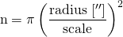
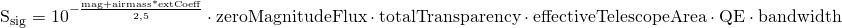

Vrednosti članova formule za SNR za odabrane parametre:
- Ssig = 0 e-/s
- Ssky = 0 e-/s/pix
- Sdc = 0 e-/s/pix
- Sro2 = 0 e-/pix
- n = 0 pix
Iz izraza za SNR:

dobijamo izraz za vreme ekspozicije:

Broj piksela dobijamo kao:
gde je:

Signal sa neba dobijamo iz:

Signal sa objekta dobijamo iz:
Ovde su:
- mags - sjaj neba (Sky brightness (mag/arcsec2))
- mag - magnituda posmatranog objekta (Magnitude)
- zeroMagnitudeFlux - fluks nulte magnitude za izabrani filter u e-/s/m2/Å
- skyTransparency - Sky transparency
- totalTransparency - Total transparency on all optical elements
- telescopeArea - površina primarnog ogledala u m2
- QE - kvantna efikasnost izabranog ccd detektora (peak QE)
- bandwidth - širina izabranog filtera u Å